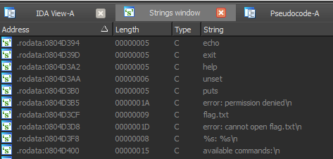

Description: Connect to the service listening at 10.210.8.1:6969 and get the flag.
Solution: We have x86 ELF binary (attached to this writeup). If you open it in disassembler, you will find that it's obfuscated, but strings aren't encrypted:

So, we have something like command interpreter... but the most intresting string is, of course, "flag.txt". Now take a look into function, where this string are used. It's sub_080488D0 which we can call on_cat. Because the only place, where it's used is:
Now it's time to understand obfuscation method:
\\some code ...
while ( 1 ) {
while ( 1 ) {
while ( 1 ) {
while ( 1 ) {
while ( 1 ) {
while ( 1 ) {
curCmdCode = nextCmdCode;
ni0 = nextCmdCode - 2044764020;
if ( nextCmdCode <= 2044764020 )
break;
ni1 = curCmdCode - 2044764021;
if ( curCmdCode == 2044764021 )
nextCmdCode = -12968513931;
}
ni2 = curCmdCode + 2004157958;
if ( curCmdCode > -2004157958 )
break;
ni3 = curCmdCode + 2087107103;
if ( curCmdCode == -2087107103 )
nextCmdCode = 646359876;
}
v77 = curCmdCode + 1904900740;
if ( curCmdCode > -1904900740 )
break;
v76 = curCmdCode + 2004157957;
if ( curCmdCode == -2004157957 ) {
v12 = fprintf(
globalStream,
"error: permission denied\n",
v15,
v16,
v17,
v18,
v19,
v20,
v21);
v86 = 0;
nextCmdCode = 1903774409;
v18 = v12;
}
}
v75 = curCmdCode + 1549151840;
if ( curCmdCode > -1549151840 )
break;
v74 = curCmdCode + 1904900739;
if ( curCmdCode == -1904900739 ) {
v14 = fprintf(
globalStream,
"error: cannot open flag.txt\n",
v15,
v16,
v17,
v18,
v19,
v20,
v21);
v86 = 0;
nextCmdCode = -1116102172;
v16 = v14;
}
}
v73 = curCmdCode - 1903774408;
if ( curCmdCode <= 1903774408 )
break;
v35 = curCmdCode - 1903774409;
if ( curCmdCode == 1903774409 ) {
v33 = -196240387;
v32 = -2004157957;
v3 = fprintf(
globalStream,
"error: permission denied\n",
v15,
v16,
v17,
v18,
v19,
v20,
v21);
v86 = 0;
nextCmdCode = v33;
v31 = v3;
}
}
v72 = curCmdCode + 1488433617;
if ( curCmdCode > -1488433617 )
break;
v71 = curCmdCode + 1549151839;
if ( curCmdCode == -1549151839 )
nextCmdCode = -184417779;
}
\\more code...The original code was divided into blocks, which were divided between states of finite automata. Each state is defined by current state (curCmdCode). The next state is defined by variable nextCmdCode. The only thing we should do to deobfuscate is to find all possible ways in given finite automata. But there is an earsier way: in function named on_cat we can notice one strange thing:
v2 = 799129272; if (!dword_804E894) v2 = 373595890; nextCmdCode = v2;
this means that next execution flow depends of the value of global variable dword_804E894, which is changed to value 1 only in one place: function, named on_put. Now take a look into function on_put at address 0x0804AC80.
This function checks elements of global array globalVars at address 0x0804E8A8 (it's used to store pairs name&value, entered by user), where first 256 bytes is a name of variable and next 256 is suggested value or vice versa. So lets try to create variable in global array globalVar with name "puts" and value "printf" or vice versa, then type "puts" and "cat flag.txt".... and we will get the flag.
I didn't logging my actions during the ctf so the next code is just a local test:
>ncat 192.168.249.144 6969 ############################################################# # Welcome to 5h311.nsa.gov # # All connections are monitored and recorded # # Disconnect IMMEDIATELY if you are not an authorized user! # ############################################################# $ set puts printf $ puts # cat flag.txt Yahoooo_its_my_flag #
So the task is done and no deobfuscation has been really needed.
Adidas shoes | Women's Nike Air Jordan 1 trainers - Latest Releases , Ietp